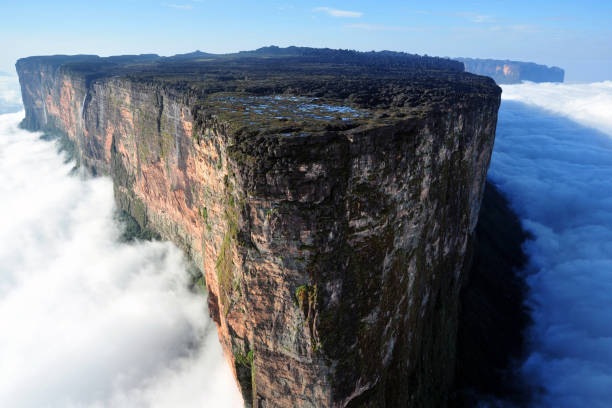

Guiana
Dados gerais
| Capital | Georgetown |
| População | 800 mil |
| Área | 215 mil km² |
| Idioma oficial | Inglês |
| Moeda | Dólar guianense |
| Forma de governo | República presidencialista |
A Guiana é o único país de língua inglesa da América do Sul, herança de sua colonização britânica. Localizada no norte do continente, faz fronteira com Venezuela, Brasil e Suriname. Cerca de 80% do território é coberto por floresta tropical praticamente intocada, o que faz do país um dos mais biodiversos e menos densamente populados do mundo.

Cultura e sociedade
A população guianense é extremamente diversa: descendentes de africanos, indo-guianenses, povos indígenas Ameríndios, além de comunidades de origem portuguesa, chinesa e europeia. Essa pluralidade se reflete na gastronomia, nas festas religiosas e na música — o chutney e o calypso convivem lado a lado.
A Guiana passou por uma transformação econômica após a descoberta de enormes reservas de petróleo offshore em 2015, tornando-se um dos países que mais cresce economicamente no mundo. A floresta amazônica preservada é um ativo ambiental de imenso valor para o país.
Turismo
As Cataratas Kaieteur, com 226 metros de queda livre, são uma das mais poderosas do mundo — quase cinco vezes mais altas que as Cataratas do Niágara. O Parque Nacional Kaieteur e os tepuis da Grande Savana oferecem ecoturismo único. Georgetown guarda belas construções coloniais de madeira em estilo vitoriano.